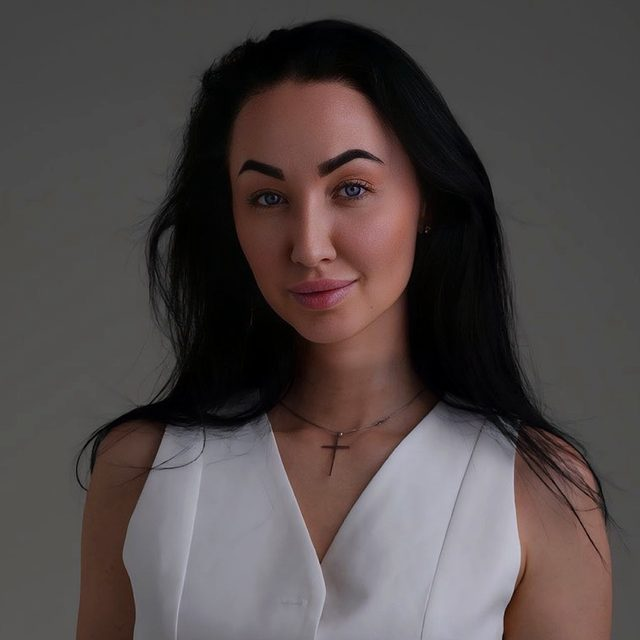

Анкета перед стартом
Две минуты, ответы вижу только я. Если практика тебе сейчас не подходит, я скажу об этом до оплаты
Неделя практики со мной, Ксенией Новосёловой. Старт 9 ноября, в новолуние. Каждый день одна практика 25-30 минут и общий чат, где я рядом все семь дней. Запись до 8 ноября, участие 2 990 ₽
К вечеру вроде ничего особенного не делала, а сил нет совсем. Ни на себя, ни на близких
Весь день тело держит оборону: «надо», «должна», «потом отдохну». За этими чужими голосами свой уже почти не слышно. Стресс оседает в теле: челюсть сжата, плечи подняты к ушам, дыхание короткое, будто всё время чего-то ждёшь. Ложишься и долго не можешь уснуть
Ты уже пробовала. Медитации в приложении не идут, в голове много мыслей. Кундалини по видео выходит похожей на утреннюю гимнастику, и непонятно, правильно ли ты делаешь. А ещё пишут, что кундалини опасна, и непонятно, можно ли тебе вообще
Эта неделя для тебя, если хочешь проверить на себе, что меняют 25-30 минут практики в день: сон, напряжение в теле, силы к вечеру. В первый и седьмой день ты это замеришь
Вдох на четыре счёта, выдох на восемь. Три круга
Две минуты, ответы вижу только я. Если практика тебе сейчас не подходит, я скажу об этом до оплаты
Дыхание или крия (связка движений с дыханием) и медитация. Первый день самый мягкий, дальше мы потихоньку наращиваем
Дни устроены одинаково, цели разные
Пишешь, что почувствовала и что непонятно, отвечаю я сама, каждый день. Рядом другие участницы, неделю мы проходим вместе
Сон, тревога, напряжение в теле, силы к вечеру, по шкале от 0 до 10. Сможешь сравнить себя в начале и в конце недели
Остаётся у тебя и после потока
Это первый поток, поэтому отзывов о нём пока нет. Расскажу, что вижу у учениц, с которыми занимаюсь 1 на 1. Первые сдвиги приходят быстро: многие спят спокойнее и впервые за долгое время замечают, что плечи опустились. В ладонях и спине появляется тепло или покалывание. Бывает, после практики хочется плакать, а потом становится легче
За неделю жизнь не перевернётся. У моих учениц 1 на 1 результат складывается из встреч 2-3 раза в неделю и 10-15 минут своей практики каждый день. Через пару недель многие замечают, что вечером у них снова остаются силы. За 7 дней ты поймёшь, как практика работает на тебе, и сама решишь, хочешь ли идти дальше
Кундалини-йога работает с дыханием и энергией тела, поэтому до оплаты мы проверяем, что практика тебе подходит
Сейчас эта программа не подойдёт, если у тебя:
Если что-то из списка про тебя, напиши мне, подскажу, что можно вместо этой программы. Если бывают панические атаки, тоже напиши до оплаты, вместе решим, как заниматься безопасно

Я Ксения Новосёлова, сертифицированный проводник кундалини-йоги, обучение проходила у Юлии Чай. В кундалини около двух лет, пришла в неё через садхану, ежедневную практику. Я тоже долго жила так, как от меня ждали, и не замечала этого. Веду занятия 1 на 1 онлайн и сейчас учусь в международной школе кундалини-йоги Амрит Нам Саровар
Ко мне часто приходят те, кто уже пробовал заниматься по видео и бросил, потому что некому было подсказать. Я долго думала, как сделать короткий формат и не оставить человека одного с записью. Поэтому все семь дней я в чате: пишешь, что почувствовала, и мы вместе смотрим, что делать дальше
Передумала до старта, верну всё. После старта верну за дни, которые ещё не начались. Если противопоказание выяснилось уже после оплаты, верну полностью в любой день потока. Подробно в оферте
Да. Первый день самый мягкий, в записи я объясняю, что мы делаем и зачем. В анкете отметишь свой опыт, и я буду это учитывать в чате
Практика занимает 25-30 минут, запись включаешь, когда тебе удобно. Чат можно читать в любой момент дня
Светлая и свободная, в которой удобно двигаться и дышать, не обязательно белая. Тюрбан не нужен, платок по желанию
Чаще всего то, что поднимается, нормально: слёзы, раздражение, усталость. Тогда делаешь мягче и пишешь в чат. Что делать в остальных случаях, подробно расписано в памятке, она будет у тебя до старта
Нет. Это практика: дыхание, движение и медитация. Она не заменяет врача и психотерапевта, и если состояние острое, сначала к врачу
Нет. Религиозной части в программе нет, мы работаем с дыханием, телом и внутренним состоянием. В практике есть мантры на гурмукхи: слова простые и пришли из сикхской традиции, язык знать не нужно. Мы используем их как звук и вибрацию в теле. Если твоя вера не позволяет петь мантры, не пой, это только твоё решение. Я никого не заставляю